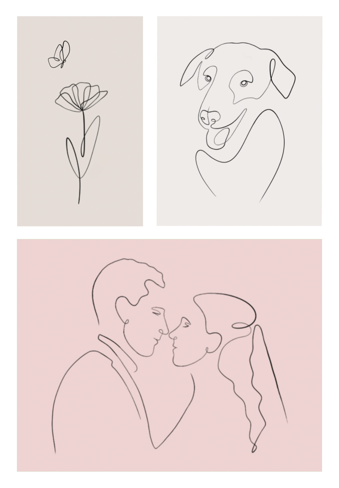
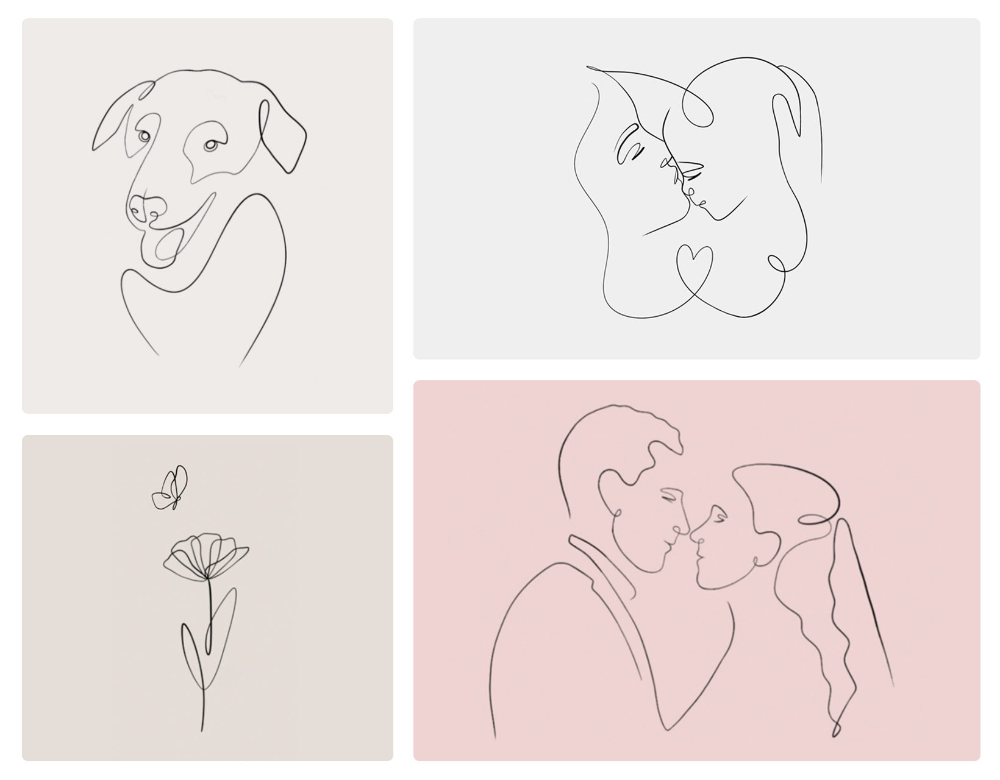

2024
Privates Projekt - Line Art
In meiner Freizeit erstelle ich gerne auf dem iPad Zeichnungen im
Line Art Stil in dem Programm Procreate.
Als Vorlage verwende ich eigene Fotos, häufig
von meiner Familie und kreiere durch einfache Linien moderne und ästhetische Bilder.